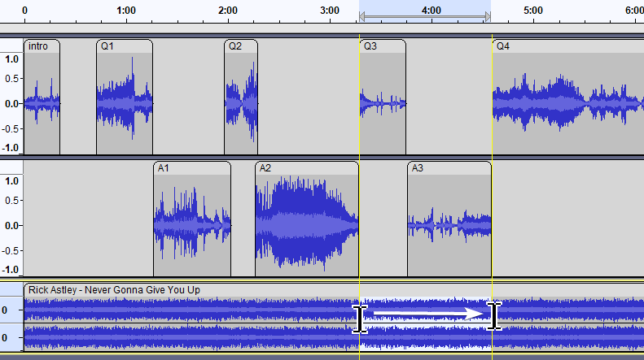

Boundary Snap Guides
From Audacity Development Manual
Boundary Snap Guides (or "Snap Guides" for short) make it easy to draw a selection that starts or ends at a physical boundary like a point or region label or a clip inside the track. Snap Guides also let you exactly place the cursor at such a boundary.
When the selection or cursor exactly aligns with the boundary, the Snap Guide appears as a yellow vertical line at the point of alignment.
How Snap Guides work
When you take any of the following actions:
- Create a selection with the mouse
- Modify the selection boundaries with the mouse
- Time Shift a track or clip by dragging
then the selection boundary (or the boundary of the Time Shifted track or clip) will snap to the closest of the following physical boundaries:
- The start or end of a track or clip
- The start or end of a region label
- The time position represented by a point label
- Time zero (0 on the Timeline).
Additionally, clicking close to one of the above boundaries will automatically snap the click to the exact point of that boundary, moving the cursor position to the boundary.
Examples
In the image below, a clip in the "Guest" track is being dragged leftwards with the mouse, as shown by the  Time Shift Tool mouse pointer. When the clip reaches the right-hand boundary of the second clip in the track above, a vertical yellow Snap Guide line appears through all the tracks, showing the position of the snap boundary. Once this Snap Guide is visible we can release the mouse and the dragged clip will be perfectly aligned with the one above:
Time Shift Tool mouse pointer. When the clip reaches the right-hand boundary of the second clip in the track above, a vertical yellow Snap Guide line appears through all the tracks, showing the position of the snap boundary. Once this Snap Guide is visible we can release the mouse and the dragged clip will be perfectly aligned with the one above:
Snap Guides let you easily select from one physical boundary to another. In the image below we changed to Selection Tool. We can now hover the mouse anywhere close to the boundary of any clip, so that clicking at that point snaps the cursor to exactly the boundary of that clip. In the image, we clicked to snap the cursor to the left edge of the third clip in the "Host" track, then dragged the selection until it snapped to exactly the right edge of the third clip in the "Guest" track. We now see two yellow vertical lines corresponding to the boundaries we are snapping to, again extending through all tracks in the project.
Selection Tool. We can now hover the mouse anywhere close to the boundary of any clip, so that clicking at that point snaps the cursor to exactly the boundary of that clip. In the image, we clicked to snap the cursor to the left edge of the third clip in the "Host" track, then dragged the selection until it snapped to exactly the right edge of the third clip in the "Guest" track. We now see two yellow vertical lines corresponding to the boundaries we are snapping to, again extending through all tracks in the project.
- 
The example below shows using Snap Guide to align the cursor with a point label. Using Selection Tool, we hovered then clicked at a point approximately close to the "02" label. Although we were zoomed a long way out, the click snapped to the label position, moving the cursor to exactly that point as indicated by the yellow Snap Guide line in the audio track above. Similarly, you can click to snap to either boundary of a region label.
| If there are two boundaries very close to one another and Audacity cannot tell which is appropriate, Audacity will not snap to either. To snap to one of them, zoom in so you can clearly position the mouse closer to one boundary than the other. |
Snap Guides are distinct from the Snap-To checkbox in Selection Toolbar which snaps selection edges (or the cursor) to a chosen unit of time.
|